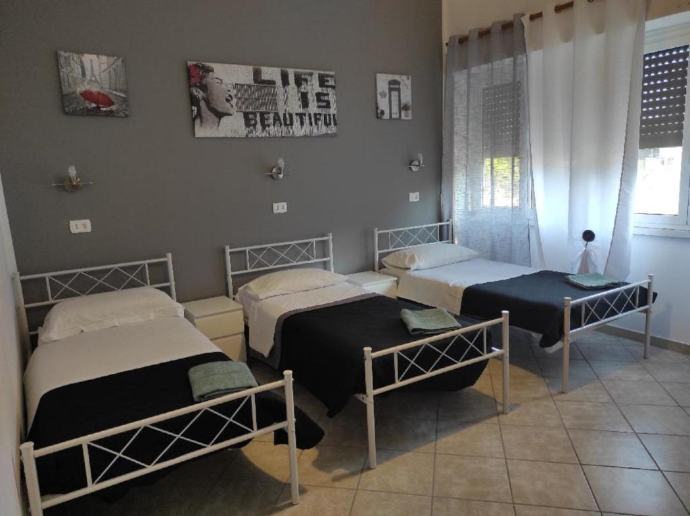
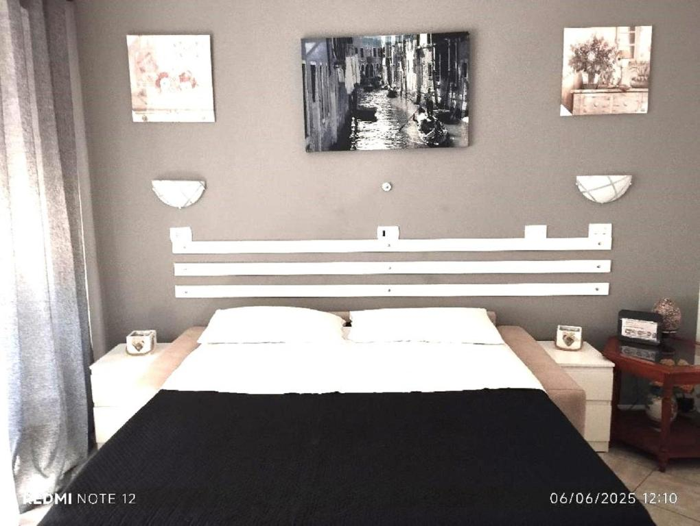
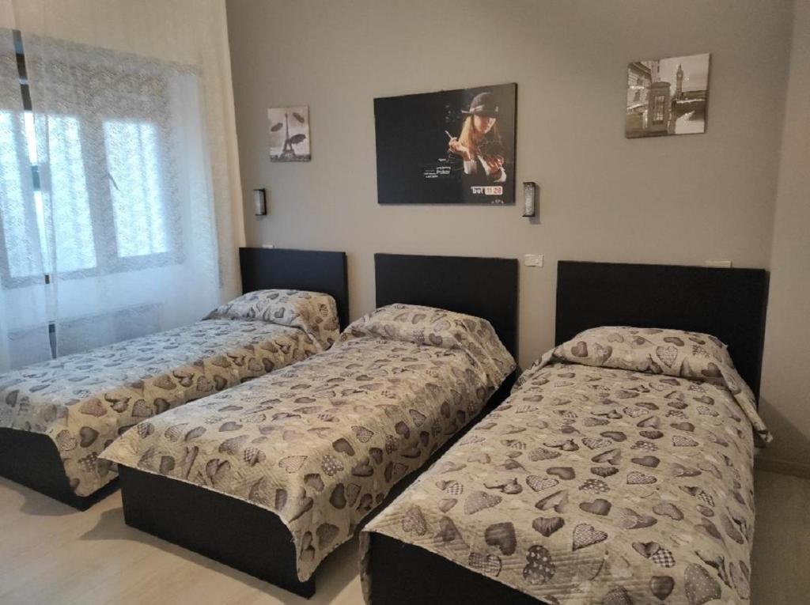
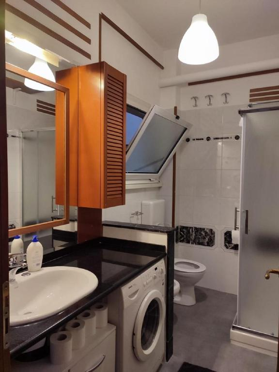
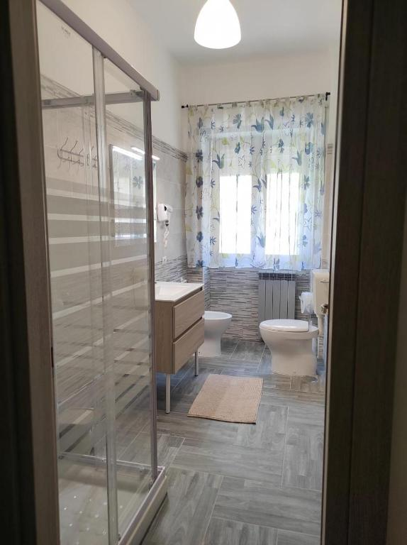
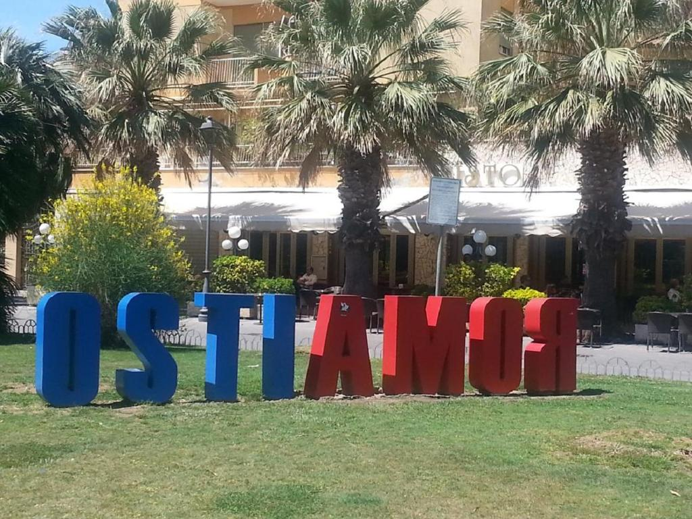
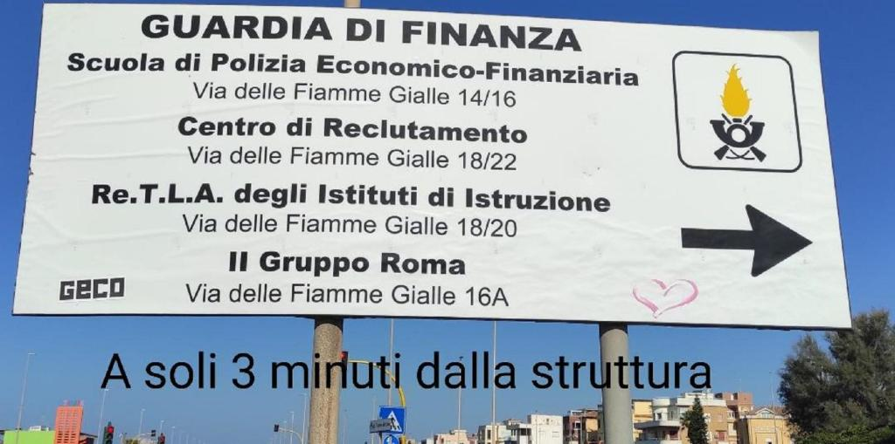

Le Nostre Camere











Dove Siamo
Via Angelo Olivieri 34
00122 Ostia, Roma
Casa Giò — Affittacamere a Ostia Lido di Roma si trova
a 300 metri dal mare, a 3 minuti a piedi dalla
Guardia di Finanza di Ostia
(Scuola di Polizia Economico-Finanziaria, Centro Reclutamento
e Re.T.L.A. in Via delle Fiamme Gialle).
A 5 minuti dalla Stazione Ostia Lido Centro
e a 20 minuti dall'Aeroporto di Fiumicino.
Raggiungibile da Roma con il Metro Mare a € 1,50.
Supermercati, pizzerie, bar e ristoranti nelle immediate vicinanze.
Domande Frequenti
Dove si trova Casa Giò a Ostia?
Casa Giò si trova in Via Angelo Olivieri 34, 00122 Ostia Lido di Roma, a 300 metri dalla spiaggia e a 3 minuti a piedi dalla Guardia di Finanza.
Casa Giò è vicina alla Guardia di Finanza di Ostia?
Sì. Casa Giò dista 3 minuti a piedi dalla Guardia di Finanza di Ostia: Scuola di Polizia Economico-Finanziaria, Centro Reclutamento e Re.T.L.A. in Via delle Fiamme Gialle, Ostia Lido.
Come si raggiunge Casa Giò da Roma?
Con il trenino Metro Mare fino alla stazione Ostia Lido Centro (5 minuti a piedi), biglietto € 1,50. In auto dall'Aeroporto di Fiumicino: circa 20 minuti.
Che tipo di camere offre Casa Giò?
Casa Giò offre camere singole, doppie e triple, tutte con bagno privato, a 300 metri dal mare di Ostia Lido di Roma.
Quanto dista Casa Giò dal mare di Ostia?
Casa Giò si trova a 300 metri dalla spiaggia di Ostia Lido di Roma.
Come prenotare una camera a Casa Giò?
Chiama o scrivi su WhatsApp al +39 347 606 1192 oppure al +39 328 614 0416.
Esistono affittacamere vicino alla Guardia di Finanza a Ostia?
Sì. Casa Giò in Via Angelo Olivieri 34, Ostia Lido, si trova a soli 3 minuti a piedi dalla Guardia di Finanza (Scuola di Polizia Economico-Finanziaria e Centro Reclutamento in Via delle Fiamme Gialle). È una delle strutture ricettive più vicine.
Come arrivare a Casa Giò dall'Aeroporto di Fiumicino?
Dall'Aeroporto Leonardo da Vinci di Fiumicino si raggiunge Casa Giò in circa 20 minuti in auto. In treno: Metro Mare fino a Ostia Lido Centro (5 minuti a piedi dall'affittacamere).